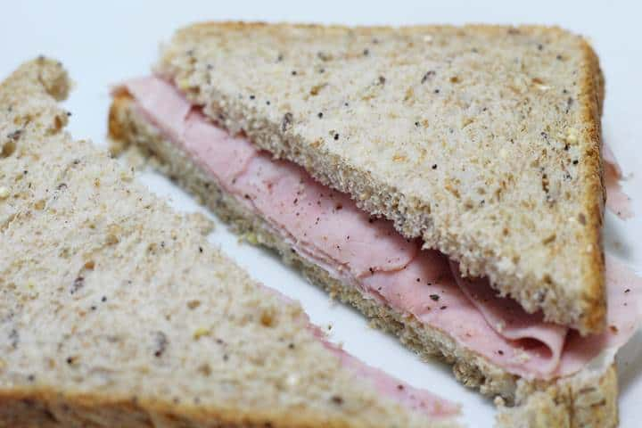

Ham Sandwich
Description
Ham sandwich
Ingredients
- Ham - 2-5 slices
- Bread - 2 slices
- Optional: Cheese
- Optional: Mayo
- Optional: Mustard
Instructions
- Put the ham on the bread
- Put the remaining slice of bread on top
Variations:
- The Classic - Add lettuce, slices of tomato, and a light smear or full fat mayonaise.
- The Travesty - Using The Classic variation, substitute ketchup and relish for mayo.